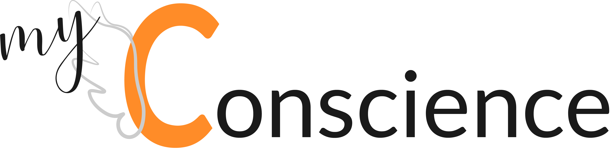

<!--<ion-header>-->
  <!--<ion-navbar>-->
    <!--<button ion-button menuToggle>-->
      <!--<ion-icon name="menu"></ion-icon>-->
    <!--</button>-->
    <!--<ion-title>Home</ion-title>-->
  <!--</ion-navbar>-->
<!--</ion-header>-->

<!--<ion-content padding>-->
  <!--<h3>Ionic Menu Starter</h3>-->

  <!--<p>-->
    <!--If you get lost, the <a href="http://ionicframework.com/docs/v2">docs</a> will show you the way.-->
  <!--</p>-->

  <!--<button ion-button secondary menuToggle>Toggle Menu</button>-->
<!--</ion-content>-->

<ion-content padding class="transparent-header">
  <div class="main-home">
    <ion-row>
      <ion-col class="logo-home">
        
      </ion-col>
    </ion-row>
    <ion-card class="card-home">
      <ion-row>
        <ion-col>
          Salut,
        </ion-col>
      </ion-row>
      <ion-row>
        <ion-col>
          c’est ta conscience 2.0 qui te parle.
        </ion-col>
      </ion-row>
      <ion-row>
        <ion-col>
          Ensemble nous allons réaliser de grande choses. Fini la procrastination et place à l’action !
        </ion-col>
      </ion-row>
      <ion-row>
        <ion-col>
          Je me suis matérialisée pour simplifier nos échanges.
          Grâce à cela nous allons pouvoir lister des tâches à effectuer et/ou des objectifs à atteindre.
        </ion-col>
      </ion-row>
      <ion-row>
        <ion-col>
          Je compte sur toi pour ne pas me faire faux bond.
          J’ai confiance en nous !
        </ion-col>
      </ion-row>
      <ion-row>
        <ion-col>
          J’ai hâte, on commence quand ?
        </ion-col>
      </ion-row>
      <ion-row>
        <ion-col>
          <div class="div-button">
            <button class="green" ion-button [navPush]="pushPage">suivant</button>
          </div>
        </ion-col>
      </ion-row>
    </ion-card>
  </div>
</ion-content>
